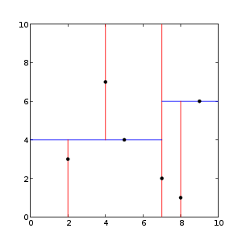

class: center, middle # Nearest Neighbors in scikit-learn estimators ## - API challenges - Tom Dupré la Tour - PyData Paris meetup 19/06/2018 .affiliations[   ] <!-- ######################### --> --- class: center, middle # Scikit-learn's API <!-- ######################### --> --- .center[ <img src="images/scikit-learn-logo.png" style="width: 200px;" /> ] ## scikit-learn: Machine learning in Python - 28k stars on GitHub - 1000+ contributors - 400k/month unique visits on http://scikit-learn.org/ -- count: false ## Some reasons of the popularity - Simple and elegant API - Great documentation <!-- ######################### --> --- .center[ <img src="images/scikit-learn-logo.png" style="width: 200px;" /> ] ## scikit-learn: API principles - Consistency - Inspection - Non-proliferation of classes - Composition - Sensible defaults <!-- ######################### --> --- ## Estimator ``` from sklearn.ensemble import `RandomForestClassifier` model = `RandomForestClassifier`() y_pred = model.fit(X_train, y_train).predict(X_test) ``` <!-- ######################### --> --- ## Other estimator ``` from sklearn.linear_model import `LogisticRegression` model = `LogisticRegression`(C=10) y_pred = model.fit(X_train, y_train).predict(X_test) ``` <!-- ######################### --> --- ## Transformer ``` from sklearn.decomposition import `PCA` # transformer model = `PCA`(n_components=10) X_train_2 = model.fit(X_train).`transform`(X_train) X_test_2 = model.`transform`(X_test) ``` <!-- ######################### --> --- ## Transformer + Classifier ``` from sklearn.decomposition import PCA from sklearn.linear_model import LogisticRegression # transformer trans = PCA(n_components=10) X_train_2 = trans.fit(X_train).transform(X_train) X_test_2 = trans.transform(X_test) # classifier model = LogisticRegression(C=10) y_pred = model.fit(X_train_2, y_train).predict(X_test_2) ``` <!-- ######################### --> --- ## Pipeline ``` from sklearn.pipeline import `make_pipeline` from sklearn.decomposition import PCA from sklearn.linear_model import LogisticRegression model = `make_pipeline`(PCA(n_components=10), LogisticRegression(C=10)) y_pred = model.fit(X_train, y_train).predict(X_test) ``` <!-- ######################### --> --- ## More complex pipeline ``` from sklearn.pipeline import make_pipeline, `make_union` from sklearn.decomposition import PCA, KernelPCA from sklearn.feature_selection import SelectKBest from sklearn.linear_model import LogisticRegression union = `make_union`(PCA(), KernelPCA(kernel='rbf')) model = make_pipeline(union, SelectKBest(k=10), LogisticRegression(C=10)) y_pred = model.fit(X_train, y_train).predict(X_test) ``` <!-- ######################### --> --- ## Grid-search and cross-validation ``` from sklearn.pipeline import make_pipeline, make_union from sklearn.decomposition import PCA, KernelPCA from sklearn.feature_selection import SelectKBest from sklearn.linear_model import LogisticRegression from sklearn.model_selection import `GridSearchCV` union = make_union(PCA(), KernelPCA(kernel='rbf')) pipe_ = make_pipeline(union, SelectKBest(k=10), LogisticRegression(C=10)) param_grid = {'selectkbest__k': [5, 10, 20], 'logisticregression__C': [1, 10, 100]} model = `GridSearchCV`(estimator=pipe_, param_grid=param_grid) y_pred = model.fit(X_train, y_train).predict(X_test) ``` <!-- ######################### --> --- ## Same estimator API in other libraries ``` # Similar API # vanity from `autosklearn`.estimators import AutoSklearnClassifier # 2.2k * from `hmmlearn`.hmm import GaussianHMM # 1.2k * # With internal wrappers from `xgboost` import XGBClassifier # 12.k * from `lightgbm` import LGBMClassifier # 5.5k * from `catboost` import CatBoostClassifier # 2.8k * from `keras`.wrappers.scikit_learn import KerasClassifier # 29.k * from `tf`.estimator import DNNClassifier # 99.k * # With external wrappers from `skorch`.net import NeuralNetClassifier # 1.3k * # scikit-learn-contrib from `imblearn`.under_sampling import ClusterCentroids # 2.1k * from `sklearn_pandas` import CategoricalImputer # 1.5k * from `lightning`.classification import CDClassifier # 1.0k * from `hdbscan` import HDBSCAN # 0.8k * ``` - Users know the API and the associated abstraction - Plug them into Pipeline, into GridSearchCV, etc. <!-- ######################### --> --- class: center, middle # What's new in scikit-learn dev ## (to appear in v0.20) <!-- ######################### --> --- class: middle ## Glossary of Common Terms and API Elements - http://scikit-learn.org/dev/glossary.html <!-- ######################### --> --- class: middle ## `ColumnTransformer` ``` from sklearn.compose import `make_column_transformer` from sklearn.preprocessing import StandardScaler, OneHotEncoder from sklearn.pipeline import make_pipeline from sklearn.linear_model import LogisticRegression preprocessing = `make_column_transformer`( [(['age', 'fare'], StandardScaler()), # continuous features (['sex', 'pclass'], OneHotEncoder())], # categorical features remainder='drop') model = make_pipeline(preprocessing, LogisticRegression()) ``` <!-- ######################### --> --- class: middle ## `TransformedTargetRegressor` ``` import numpy as np from sklearn.linear_model import LinearRegression from sklearn.compose import TransformedTargetRegressor model = TransformedTargetRegressor(LinearRegression(), func=np.log, inverse_func=np.exp) y_pred = model.fit(X_train, y_train).predict(X_test) ``` <!-- ######################### --> --- class: middle ## `CategoricalEncoder`/`OneHotEncoder` ## `MICEImputer` ## ... <!-- ######################### --> --- class: center, middle # Nearest Neighbors <!-- ######################### --> --- count: false class: center, middle # Nearest Neighbors Classifier .center[<img src="images/knn.png" style="width: 100%;" />] <!-- ######################### --> --- # Nearest Neighbors in scikit-learn ## Used in: - `KNeighborsClassifier`, `RadiusNeighborsClassifier` `KNeighborsRegressor`, `RadiusNeighborsRegressor`, `LocalOutlierFactor` - `TSNE`, `Isomap`, `SpectralEmbedding` - `DBSCAN`, `SpectralClustering` <!-- ######################### --> --- # Nearest Neighbors ## Computed with brute force, `KDTree`, or `BallTree`, ... .center[ <img src="images/balltree.png" style="width: 400px;" />] -- count: false ## ... or with approximated methods (random projections) - annoy (3.5k stars) (Spotify) - faiss (3.7k stars) (Facebook research) - nmslib (0.8k stars) - ... <!-- ######################### --> --- class: center, middle # Nearest Neighbors benchmark .center[https://github.com/erikbern/ann-benchmarks] .center[<img src="images/bench_nn.png" style="width: 80%;" />] <!-- ######################### --> --- class: center, middle # Nearest Neighbors ## - scikit-learn API - <!-- ######################### --> --- ## Trees and wrapping estimator - `KDTree` and `BallTree`: - Not proper scikit-learn estimators - `query`, `query_radius`, which return `(indices, distances)` -- count: false - `NearestNeighbors`: - scikit-learn estimator, but without `transform` or `predict` - `kneighbors`, `radius_neighbors`, which return `(distances, indices)` <!-- ######################### --> --- ## Calling estimators - `KernelDensity`, `NearestNeighbors`: - Create an instance of `BallTree` or `KDTree` -- count: false - `KNeighborsClassifier`, `KNeighborsRegressor`, `RadiusNeighborsClassifier`, `RadiusNeighborsRegressor`, `LocalOutlierFactor` - Inherit `fit` and `kneighbors` (weird) from `NearestNeighbors` -- count: false - `TSNE`, `DBSCAN`, `Isomap`, `LocallyLinearEmbedding`: - Create an instance of `NearestNeighbors` -- count: false - `SpectralClustering`, `SpectralEmbedding`: - Call `kneighbors_graph`, which creates an instance of `NearestNeighbors` <!-- ######################### --> --- ## Copy of NearestNeighbors parameters in each class ``` params = [algorithm, leaf_size, metric, p, metric_params, n_jobs] # sklearn.neighbors NearestNeighbors(n_neighbors, radius, *params) KNeighborsClassifier(n_neighbors, *params) KNeighborsRegressor(n_neighbors, *params) RadiusNeighborsClassifier(radius, *params) RadiusNeighborsRegressor(radius, *params) LocalOutlierFactor(n_neighbors, *params) # sklearn.manifold TSNE(metric) Isomap(n_neighbors, neighbors_algorithm, n_jobs) LocallyLinearEmbedding(n_neighbors, neighbors_algorithm, n_jobs) SpectralEmbedding(n_neighbors, n_jobs) # sklearn.cluster SpectralClustering(n_neighbors, n_jobs) DBSCAN(eps, *params) ``` <!-- ######################### --> --- ## Different handling of precomputed neighbors in `X` - Handle precomputed distance matrices: - `TSNE`, `DBSCAN`, `SpectralEmbedding`, `SpectralClustering`, - `LocalOutlierFactor`, `NearestNeighbors` - `KNeighborsClassifier`, `KNeighborsRegressor`, `RadiusNeighborsClassifier`, `RadiusNeighborsRegressor` - (not `Isomap`) -- count: false - Handle precomputed sparse neighbors graphs: - `DBSCAN`, `SpectralClustering` -- count: false - Handle objects inheriting `NearestNeighbors`: - `LocalOutlierFactor`, `NearestNeighbors` -- count: false - Handle objects inheriting `BallTree`/`KDTree`: - `LocalOutlierFactor`, `NearestNeighbors` - `KNeighborsClassifier`, `KNeighborsRegressor`, `RadiusNeighborsClassifier`, `RadiusNeighborsRegressor` <!-- ######################### --> --- class: middle # Challenges ## Consistent API, avoid copying all parameters, ## Changing the API? difficult without breaking code ## Use approximated nearest neighbors from other libraries <!-- ######################### --> --- class: center, middle # Proposed solution ## Precomputed sparse nearest neighbors graph ### [still under review] <!-- ######################### --> --- ## Precomputed sparse nearest neighbors graph Steps: 1. Make all classes accept precomputed sparse neighbors graph -- count: false 2. Add sparse graph filtering functions -- count: false 3. Pipeline: Add `KNeighborsTransformer` and `RadiusNeighborsTransformer` ``` from sklearn.pipeline import make_pipeline from sklearn.neighbors import KNeighborsTransformer from sklearn.manifold import TSNE graph = KNeighborsTransformer(n_neighbors=n_neighbors, mode='distance', metric=metric) tsne = TSNE(metric='precomputed', method="barnes_hut") model_1 = make_pipeline(graph, tsne, memory='path/to/cache') model_2 = TSNE(metric=metric, method="barnes_hut") ``` <!-- ######################### --> --- ## Precomputed sparse nearest neighbors graph Improvements: 1. All parameters are accessible in the transformer -- count: false 2. Caching properties of the pipeline (`memory="path/to/cache"`) -- count: false 3. Allow custom nearest neighbors estimators ``` # Example: TSNE with AnnoyTransformer: 46.222 sec TSNE with KNeighborsTransformer: 79.842 sec TSNE with internal NearestNeighbors: 79.984 sec ``` <!-- All parameters are accessible in NN estimator, caching properties of the pipeline, custom NN estimator custom NN estimator example --> <!-- other solutions: - object in parameter with query methods #8999 (+) use radius/kneighbors parameters (save time compared to filtering the graph), (+) no need to have a sorted graph, (-) caching and precompute more than necessary, (-) reread #8999 - Give a NN fitted object (pipeline friendly?, wrapper would be weird) --> <!-- ? Show fast filtering (vectorized) for k to lower k? --> <!-- ######################### --> --- class: center, middle, end-slide # Thank you for your attention! tomdlt.github.io/pydata2018.html @tomdlt10